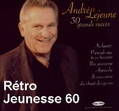
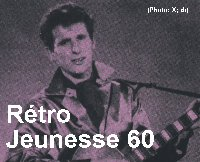

André Lejeune
C'est vers la fin des années 50 que le public à l'occasion de découvrir cet auteur-compositeur-interprète, alors que souffle un vent de création sans précédent tant du côté de la chanson québécoise (premiers Concours de la Chansons canadienne sur les ondes de Radio-Canada) que de la musique pop internationale qui vit l'irruption du rock'n roll. André Lejeune sera d'ailleurs l'un des premiers à s'afficher comme adepte de ce rythme si excitant, dès 1957. Une manchette du Journal des Vedettes le présente d'ailleurs comme "un Elvis Presley canadien-français" au moment de la rentrée automnale, quelques mois seulement après le passage de l'icône du rock à Ottawa compositions.
Avec la chanson "Une promesse", André Lejeune reçoit le Grand Prix CKAC du disque canadien en 1959, un classique de notre chanson longtemps oublié que redécouvrent aujourd'hui les jeunes générations, un demi-siècle après sa création.
Outre sa carrière sur scène, en tant qu'auteur-compositeur et comme animateur à la télévision, André Lejeune est également un homme d'affaires. Lui-même propriétaire de boîtes et de salles de spectacle à différentes époques, il a expérimenté le monde de la production en lançant l'étiquette "Colibri", tout en jouant un rôle d'imprésario auprès d'artistes de la relève. Il est toujours actif dans le milieu du spectacle et s'est fortement impliqué avec le Choeur des artistes.